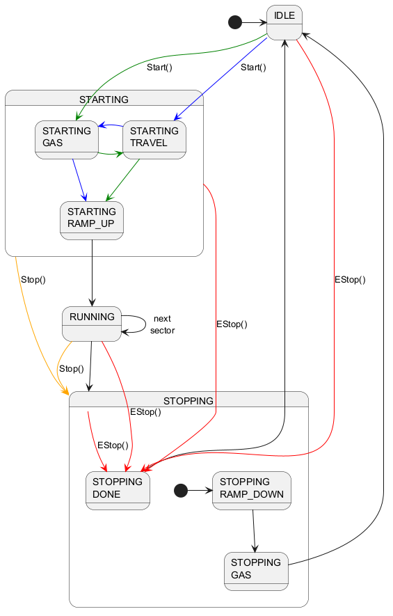

@startuml
state STARTING {
state "STARTING\nGAS" as sg
state "STARTING\nTRAVEL" as st
state "STARTING\nRAMP_UP" as sr
}
state STOPPING {
state "STOPPING\nGAS" as xg
state "STOPPING\nRAMP_DOWN" as xr
state "STOPPING\nDONE" as xd
[*] -> xr
}
[*] -> IDLE
IDLE -down[#green]-> sg : Start()
st -down[#green]->sr
sg -left[#green]->st
IDLE -down[#blue]-> st : Start()
sg -down[#blue]->sr
st -right[#blue]->sg
sr -down-> RUNNING
RUNNING -down-> STOPPING
RUNNING -> RUNNING : next\nsector
xd -up--> IDLE
xr -down-> xg
xg -up-> IDLE
STARTING -down[#orange]-> STOPPING: Stop()
RUNNING -down[#orange]-> STOPPING: Stop()
STARTING -down[#red]-> xd: EStop()
RUNNING -[#red]-> xd: EStop()
IDLE -[#red]-> xd: EStop()
STOPPING -[#red]-> xd: EStop()
@enduml